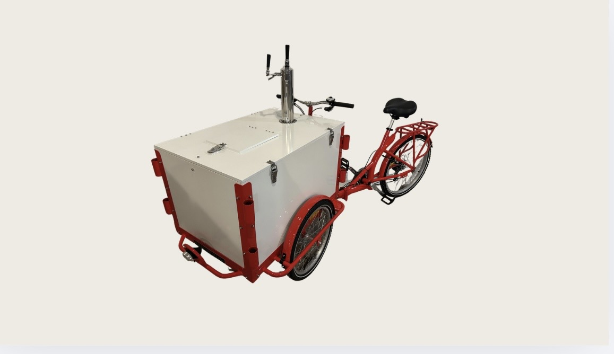
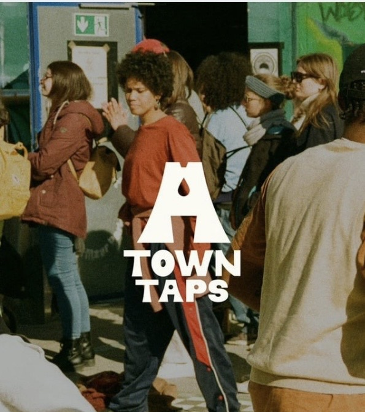
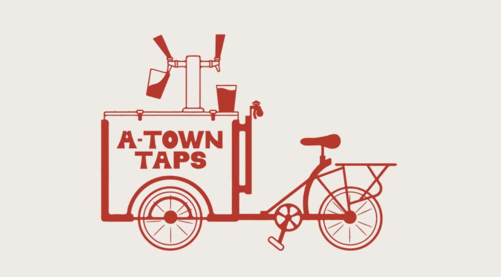

Meet Red
A-Town Taps' flagship custom beverage bike.
- Dual-tap system (Nitro + CO2)
- Two 3 gallon kegs
- Sleek, sustainable
- Crafted cocktails, mocktails, cold brew, and more!
A-Town Taps' flagship custom beverage bike.

Pouring into community one drink at a time using crafted beverages to spark connection, support meaningful causes, and create purpose-driven good trouble.
A-Town Taps offers a good trouble community rate for 501(c)(3) nonprofits and mission-driven organizations in support of community impact and equity-focused work.


Reach out to check availability and get a quote.
Contact UsAlcohol is not included. Per Georgia state law, A-Town Taps does not sell or provide alcohol. Concierge alcohol coordination is available for an additional fee and invoiced separately.